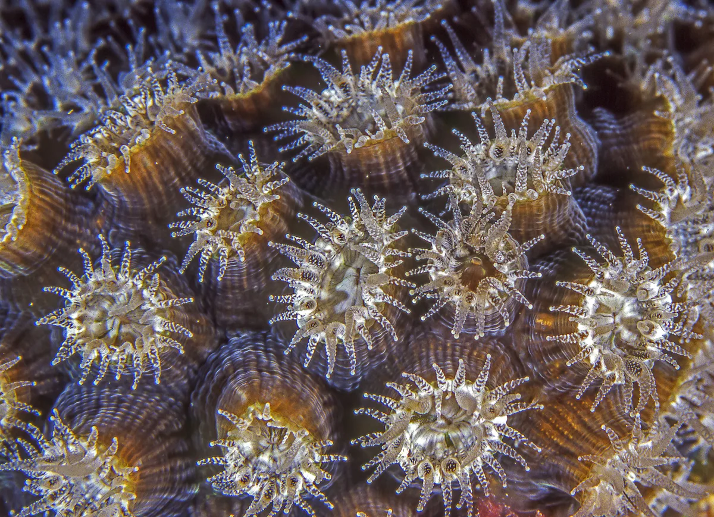

Corals belong to the phylum Cnidaria, the same group as jellyfish and sea anemones. The basic unit of a coral is the polyp—a tiny sac-like animal typically only a few millimeters in diameter. Each polyp has a central mouth surrounded by tentacles armed with stinging cells called nematocysts.
サンゴは刺胞動物門（Cnidaria）に属する。クラゲやイソギンチャクと同じ仲間である。サンゴの基本単位は「ポリプ」と呼ばれる袋状の個体で、直径はわずか数ミリメートル。口の周囲には刺胞（nematocyst）を備えた触手がある。
Most reef-building corals are colonial—hundreds to millions of genetically identical polyps connected by living tissue called coenosarc. What appears to be a single "coral" is actually a colony of clones, each polyp contributing to the shared skeleton beneath.
造礁サンゴの多くは群体性である。数百から数百万の遺伝的に同一なポリプが、共肉（coenosarc）と呼ばれる生きた組織でつながっている。一つの「サンゴ」に見えるものは、実際には無数のクローンの集合体であり、それぞれのポリプが共有する骨格の形成に貢献している。
Day and night: Two faces of coral 昼と夜：サンゴの二つの顔
During the day, most coral polyps retract into their skeletons, appearing as textured stone. At night, they extend their tentacles to capture zooplankton drifting in the current. A night dive reveals an entirely different reef—polyps fully extended, feeding actively, the reef surface appearing fuzzy and alive. This heterotrophic feeding supplements the energy from symbiotic algae by 10–30%.
日中、多くのサンゴポリプは骨格内に引っ込み、表面はざらついた岩のように見える。夜になるとポリプは触手を伸ばし、潮流に乗って漂う動物プランクトンを捕食する。ナイトダイブでは全く異なるサンゴ礁が現れる—ポリプは完全に開き、活発に摂食し、サンゴ礁の表面は毛羽立って生きているように見える。この従属栄養的な摂食は、共生藻類からのエネルギーを10〜30%補完する。
Taxonomy: Phylum Cnidaria → Class Anthozoa → Order Scleractinia (stony corals). About 1,500 species of stony corals exist worldwide, with approximately 400 species found in Japanese waters—half the world's diversity concentrated along the Kuroshio Current.
分類: 刺胞動物門 → 花虫綱 → イシサンゴ目。世界に約1,500種のイシサンゴが存在し、日本近海には約400種が生息する。世界の多様性の半数が黒潮に沿って集中している。
